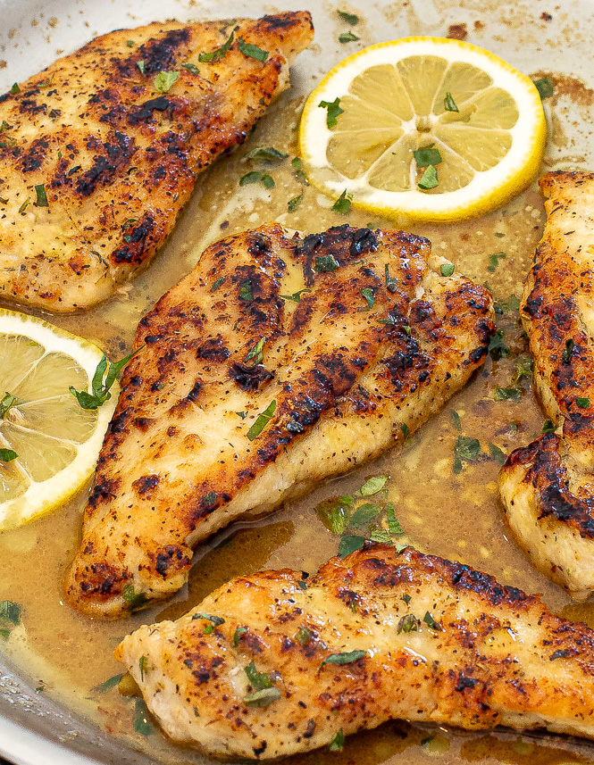

Home
Lemon Pepper Chicken

This recipe will have your friends and family hooked in just 15 minutes.
Taking plain chicken and giving it a savory sour twist!
Ingredients
For the Chicken
- 2 Large Chicken Breasts
- 1 Tablespoon flour
- 1 Tablespoon lemon pepper seasoning
- 1/2 Teaspoon kosher salt
- 2 Tablespoons extra virgin olive oil
For the Sauce
- 2 Tablespoons unsalted butter
- 2 Garlic cloves (minced)
- 3 Tablespoons lemon juice
- 1/4 Cup low-sodium chicken broth
- 1 Teaspoon lemon zest
- (Optional) Freshly chopped parsley and lemon slices for garnish
Instructions
- Cut the Chicken: Cut the chicken breast in half horizontally
- Mix Seasoning: In a mixing bowl combine the flour, lemon pepper seasoning, and salt.
- Season the Chicken: Sprinkle the seasoning evenly over both sides of the chicken, pressing it in with your hands
- Cook the Chicken: Heat the oil in a large pan over medium-high heat. Add the chicken and sear 3 to 4 minutes on both sides.
(internal tempurature should reach 160 - 165)
- Make the Sauce: Add the butter to the pan, and saute the garlic in the butter for about 30 seconds. Add the chicken broth and lemon juice, and reduce the sauce for a minute or two.
- Finish and Serve: Add the chicken back to the pan and spoon the sauce on top. Garnish with lemon zest, and if you'd like, chopped parsely and lemon slices.